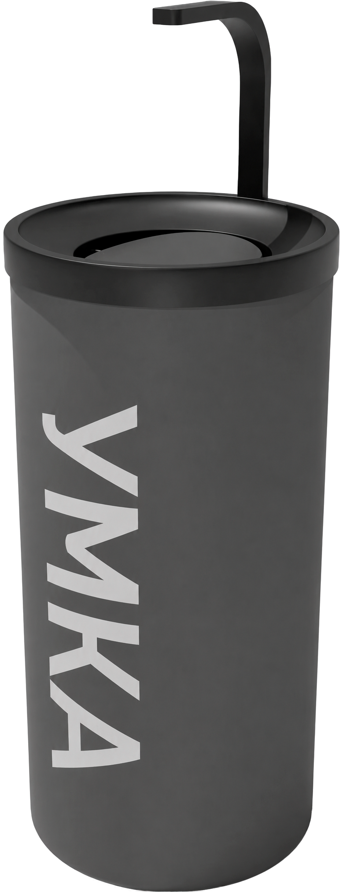
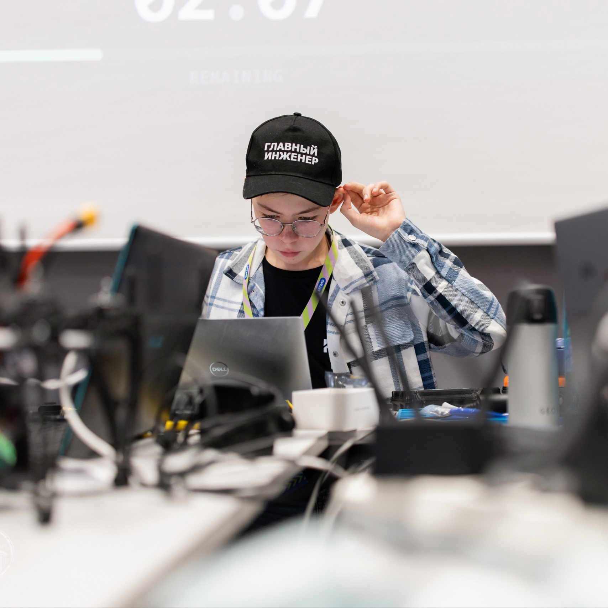

01
AISB-SK — начало
Команда сформулировала проблему: раздельный сбор часто не работает из-за человеческого фактора. Так появилась идея умной урны, которая самостоятельно определяет тип отхода.
УМКА распознаёт отходы камерой и нейросетью и автоматически направляет их в нужный отсек. Просто бросьте — остальное сделает система.

УМКА решает проблему неэффективной первичной сортировки отходов. В офисах и учебных учреждениях люди часто путают фракции или не сортируют мусор вовсе — в результате раздельный сбор теряет смысл.
Проект превращает сортировку в простой сценарий: человеку не нужно выбирать контейнер. Он выбрасывает отход, а система сама определяет его тип и отправляет в соответствующий отсек.
Внутри компактного корпуса работает связка камеры, нейросети и механизма сортировки.
Камера Raspberry Pi получает изображение отхода.
YOLOv8 классифицирует объект по обученной модели.
Привод переводит сортирующий механизм в нужное положение.
Отход попадает в одну из четырёх фракций.
В проекте соединены машинное обучение, 3D-моделирование, электроника, механика и производство.


Проект вырос из идеи сделать первичную сортировку автоматической — и постепенно превратился в полноценный инженерный продукт.
Команда сформулировала проблему: раздельный сбор часто не работает из-за человеческого фактора. Так появилась идея умной урны, которая самостоятельно определяет тип отхода.
Собран первый прототип, обучена нейронная сеть, проведено первое пилотное тестирование в ОЧУ МГ Сколково.
Проект попал в ТОП-100 проектов Москвы, прошел обучение в Академии Инноваторов, проведено 3+ пилотных тестирований.
Проект получил новое позиционирование: УМКА — продукт для популяризации раздельного сбора. Нейросеть обучена на 5000+ фотографий мусора.
Разработка второй мультимедийной версии урны.
фотографий мусора
в обучающем датасете
заявленная точность
классификации
фракции
в одной системе
Цель следующего этапа — превратить рабочий прототип в продукт, готовый к пилотному внедрению и серийному производству.
Рабочий MVP, УГТ 4–5. Доработка ПО, нейросети и серийной конструкции.
Формализация бизнеса: регистрация МИП/ООО с вузом и подготовка серийной версии.
Первая партия — 50 урн. Пилотное внедрение в общественных местах. Целевой УГТ 8.
Серийное производство и уличная антивандальная версия.
От 3D-модели и пайки плат до обучения нейросети и публичной защиты — ключевые этапы команда проходила самостоятельно.

Конструктив, механика, сборка и наладка установки.
Корпус, 3D-моделирование и медиасопровождение проекта.
Написание ПО и обучение нейронной сети.
Проект открыт к пилотным внедрениям, партнёрствам и поддержке масштабирования первой серийной партии.